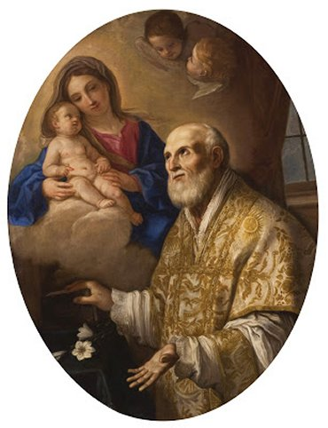

"SÃO FILIPE NERI"

SEU EXEMPLO E SEUS ENSINAMENTOS O TORNARAM UM GRANDE PERSONAGEM QUE AJUDOU NA REFORMA DA IGREJA, E UM SANTO DE PERSONALIDADE ADMIRÁVEL E MARCANTE NA HISTÓRIA DO CRISTIANISMO. FOI FUNDADOR DA CONGREGAÇÃO DO ORATÓRIO.


=ÍNDICE=
- PUBLICIDADE + FOTOS + E-MAIL